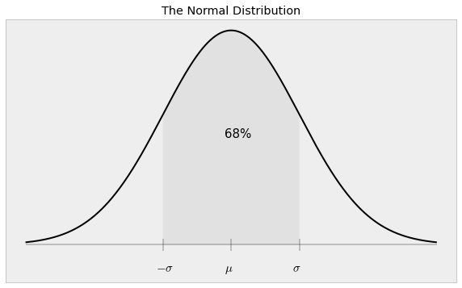

Lab 01 - Measurement and Uncertainty
Table of Contents
1 Measurement and Uncertainty
This is an introduction to lab which will lay out many of the core concepts for this course. The lab is designed to show you what good measurement habbits are and guides you a through scientific measurement of the volume of a non-uniform object (a branch).
1.1 General objectives of an experimenter
The ability to make reliable and accurate measurements is an essential skill in many fields of engineering and experimental science. You should try to become a:
- Reliable experimenter: means (at minimum) your measurements are always double checked and you have high confidence in them.
- Accurate experimenter: means you can quote the value of the measured quantity and appropriately esitmate its error.
Becoming proficient at these two goals is not easy, and normally requires adjustment of everyday habbit. Indeed, this rigid method of measurement is overkill for everyday tasks such as cutting a 2x4 to length or measuring the square footage of your house, but will enable the scientific calculation of experimental quantities. The long-term objective is for you to develop a measurement routine which reinforces reliability and accuracy at all times.
1.2 What to record on paper
Lets start with the setup. Please note that each of these should be recorded on a piece of paper! If you are working in a professional lab, you would want a lab notebook, which is a good idea when your job depends on high quality work. You can use your normal lecture notebook (or loose paper) for this lab course if you wish.
You must record these FOUR things to paper! Your measurements and sketches will be checked at the end of the lab period and counts as 50% of your lab grade!
One: Description of the task
This one is easy. Put identifying info on your records. You do not need to write a paragraph. A descriptive name that points to supporting resources, along with a date, is often all that is necessary.
- Phy 221 - Lab 1 Measurement - Sept 08 2021 - P Malsom
If you move to a different part of the experiment, please make a note in your notes. Again you do not need to write a paragraph, but please be descriptive.
Two: Make a sketch of the system
Always make a sketch of the experiment (a picture is often worth a thousand words).
- Take your time making a sketch. You will want something clear to reference later.
- Make the sketch large enough that you can label dimensions and dynamics, but leave room to record measurements.
Three: Record measurements (and error) to paper
This is a core part of the good measurement habbits. Recording to paper is faster and more reliable than typing into a computer. If you only use a computer, you will eventually lose data and have to renter results. This is sometimes CATASTROPHIC! For example when some other data you have depends on the lost data, and the experiment will take an extremely long time to redo. Please hear my warnings and record your data to a piece of paper. You can always re-enter data from paper if the computer loses it.
- Always record the measurements on the same page as the sketch. Data means nothing without a sketch to reference.
- Label your sketch with variables rather than actual numbers. (use \(\ell\) instead of \(0.1\))
- Record your error. Usually this is done with a “plus-minus”, but could also be a list of measurements used to find a standard deviation.
- Record your unit of measurement (please use SI units).
\[\ell=0.1 \pm 0.02~m\]
Four: Calculate an estimate of the expected result
Before performing the actual analysis (preferably on a computer), please perform a basic calculation with your measurements. This step is used to double check your measurements. Try to examine if this is what you expect the value to be? If it is not, review your measurements to find any mistakes!
This course will encourage you to use Python as a calculator and bugs are bound to show up in your code. This hand calculation serves as a critical check to see if there is a bug in your programming. It is very hard to find errors without a hand calculated estimate to use as a comparison.
Checkpoint:
- Get out a piece of paper and complete the first two tasks above
- Remember to record your results to paper for the next step!
2 Estimation of Volume
In the first experiment, you will make some basic measurements and estimate the volume of the piece of wood. This estimation will yield a quick result with marginal accuracy and gives no estmation of uncertainty.
2.1 Model of the system
The first step towards making an estimate is to think up a simple model which describes the system. The branch is mostly stright and has a somewhat uniform radius, so lets make the model a uniform cylinder of radius \(r\) and length \(\ell\) The volume of the cylinder is the cross sectional area (\(\pi r^2\)) multiplied by the length:
\[V = \pi r^2 \, \ell\]
2.2 Estimate the Volume
Make some basic measurements with the meter stick and calculate an estimate for the volume:
Please record these quantities to paper!
\(r\) : average radius (meters) \(\ell\) : average length (meters)
Calculate the estimate of the volume of the stick
Here is simple python script to calculate the quantity. Please type in values for rad and len and hit Shift+Enter to compute the volume:
rad = 0.032 # Enter your radius len = .59 # Enter your length vol = 3.1415926*rad**2 * len print("Volume = ",vol," m^3")
Volume = 0.001898024585216 m3
Checkpoint:
- Measure the average radius and length of the branch in \(m\).
- Calculate an estimate of the volume of the branch in \(m^3\) and record to paper.
3 Measurement of Volume
While the previous exercise is a nice start, it is far from scientific. It is missing a key part of any science measurement: estimated error. Error estimation is a complicated and deep topic, and I will have to get into a few of the details to help you understand how to correctly estimate (or better, calculate) the error in a measurement.
This type of error is sometimes called random error, and for good reason. It arrises from any random inconsistencies coming from measurement devices. An easy example is a scale (for indirectly measuring mass). The scale will have an accuracy, and the manufacturer may quote the error directly on the device. Each time you measure the mass using the scale, the measurement will be slightly different. This is random measurement error.
Conveniently, the measurement error is allowed to arrize from multiple measurement devices at once. For example, when you measure the branch, there will be some measurement error from the variation in radius, but also some measurement error from the caliper. One of these errors is much larger than the other, but both will be included intrisically in our definition of error.
Mathematical Background: Normal (Gaussian) Distribution
Before we begin, I want to refresh your understanding of the normal distribution. The normal distribution is commonly written as the following function:
\[f(x) = \frac{1}{\sqrt{2 \pi \sigma^2}} ~ e^{\left(- \frac{(x-\mu)^2}{2\sigma^2} \right)}\]
When you examine this function, please remember that the values of \(\sigma\) and \(\mu\) are fixed values, so the mathematical function looks like \(f=e^{-x^2}\), which is a “bell curve”. The term in the front (\(1/\sqrt{2\pi\sigma^2}\)) is a normalization factor, which is a constant because \(\sigma\) is a known value.
- \(\mu\) - Mean - most probable measurement
- \(\sigma\) - Standard Deviation - spread of the measurements
Approximately 68% of all measurements will fall into the “one standard deviation” range. A measurement is said to have a value of the mean (\(\mu\)) and an error of one standard deviation (\(\sigma\)). You should quote your value as:
\[E[x] = \mu \pm \sigma\]

3.1 Estimation of Error
You will often be tasked with estimating an error in a measurement. For this experiment, the error must be calculated (or estimated) for two quantities: the radius and the length. Lets start by calculating the error in radius, and then we can use a shortcut for the error in length.
The radius of the branch is obviously non-uniform. Every time you measure, you will get a slightly different answer. This is what it means to have an Error in a measurement. But the question remains: how should you report the correct amount of error? This question is not easily answered, and a full treatment would be seen in a statistics or mathematics course on probability distributions. If the data is normally distributed (we will assume this for the entire course), the correct value for the error is the standard deviation.
The standard deviation is the \(\sigma\) (sigma) in the above mathematical equation. 68% of all of the measurements will fall in this range (sometimes called “one sigma”). The standard deviation is easily calculated using python or in many other programs such as excel or even some calculators.
Please make many measurements of the radius of your non-uniform object. Aim for 20-40 measurements. In general, the more measurements you make, the better your results will be, but there are diminishing returns (as \(1/\sqrt{N}\))
3.2 Propagation of Error
I want to be direct about this. This analysis is somewhat crude. There is an entire field devoted to this topic (statistics). I am just giving you the simplified (and most used) formula.
There are three main assumptions which are built in to the simplified error propagation which is often used by science and engineering analyses:
- The randomness is normally distributed (symmetric Gaussian distribution)
- Variables are independent of each other
- The function is approximately linear over the range of the error
These assumptions are often very close to true in real world experiments, and the error formula is frequently used in science and engineering. If you are running a very sensitive experiment, you may find these assumptions are false, and you may have to use more advanced statistics to estimate the error correctly.
3.3 Systematic Error
Now is a very good time to discuss systematic error. Systematic error is an error which is present but unaccounted and skews your results consistently in one direction. They commonly arise from oversimplified models, This type of error is often hidden from view and you must be careful to reasses your measurement techniques to minimize these errors.
As an example, lets imagine your object has another cylinder embedded into it (maybe where a branch was growing out). By making our model a uniform cylinder, we ignore any other radial bulges which directly inmpacts our calculation in one direction. It does not matter how many times you measure the branch, the result will be skewed towards more volume because of the protrusion. Systematic errors often lead to incorrect interpretation of data, because the error is often burried in assumptions which are easy to overlook. You should always note these types of assumption errors in your notes (paper or typed) for discussion or thought later.
Checkpoint:
- task
4 Measuring volume with fluid displacement
A much more accurate method for measuring volume is to dispace an incompressible liquid with the irregular cylinder. By measuring the change in water height in the cylinder, you can directly measure the volume of the stick. This method removes constraint that the model be a cylinder, and thus may reduce the error in measurement (Note the error is only small when the displacement of water is large, ie: a tube with a small radius will give better results than a tube of large radius).
Please make a model of this experiment and write out the formulae for the volume of a sphere on your lab notes. Take measurements of the radius of the tube and the height change of the water (remember to record errors!). Use your formula for volume and error propagation to quote a value for the volume and its error.
Checkpoint:
- task
TODO buy this from mcmaster carr: Item 49035K31
5 Assignment
Before next lab meeting time, you need to write an abstract about the experiment and submit your work to Canvas. Please refer to the lab resources page on the course webpage before submitting your work. I know this experiment is a bit thin on physics, but be sure to report your measured volumes for the above two methods and make sure you include your error!!
Please see Lab Resources on the course webpage for more details about lab reports.
Checkpoint:
- task